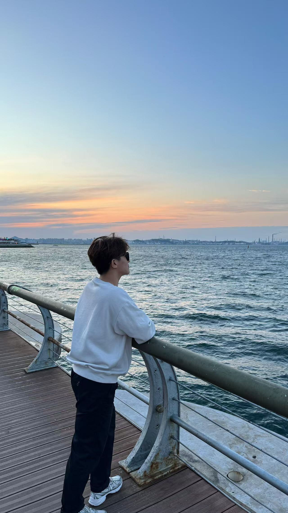

Leonardo Seventino Budiman
来自 印度尼西亚雅加达 ，目前就读于 北京理工大学 ， 主修 软件工程 专业，大二在读。

About Me
大家好，我叫许基全，英文名是 Leonardo Seventino Budiman，来自印度尼西亚雅加达。 我目前是北京理工大学软件工程专业的一名大二学生。
平时我喜欢打羽毛球和健身，也很享受和家人朋友在一起的时光。
Hobbies
This Semester's Group Project
在本学期的小组项目中，我负责的部分是 撰写故事内容 。
故事讲述一位骑士奉领主之命出发铲除作恶之人，却在调查过程中逐渐发现， 自己所效忠的领主竟一直在暗中扶持这些恶人。最终，他直面内心的挣扎， 在"服从领主"与"坚持正义"之间，做出了自己的选择。